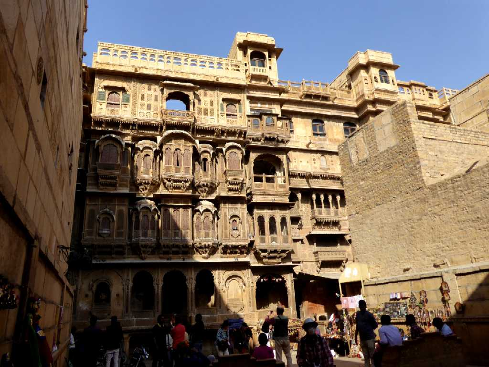
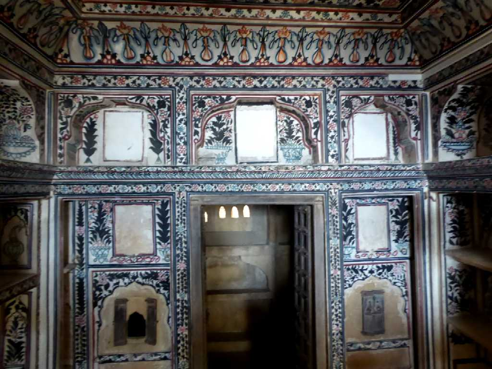
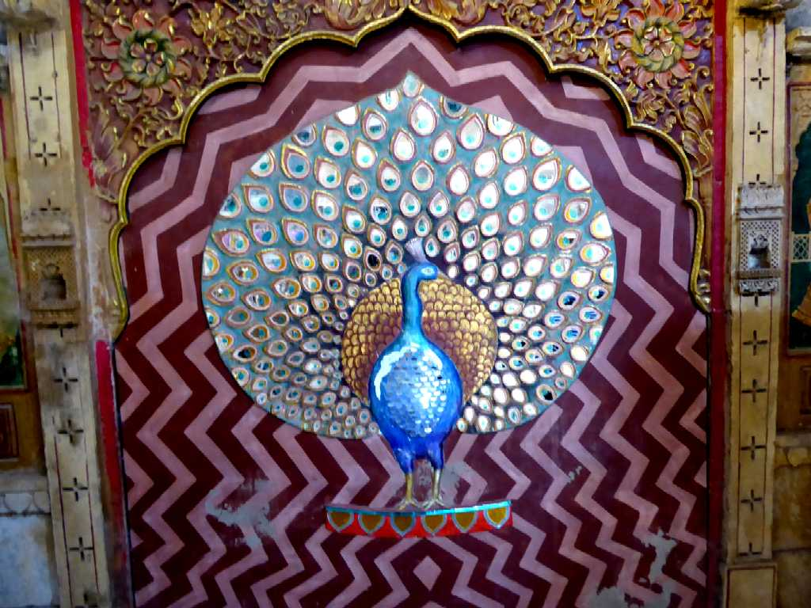
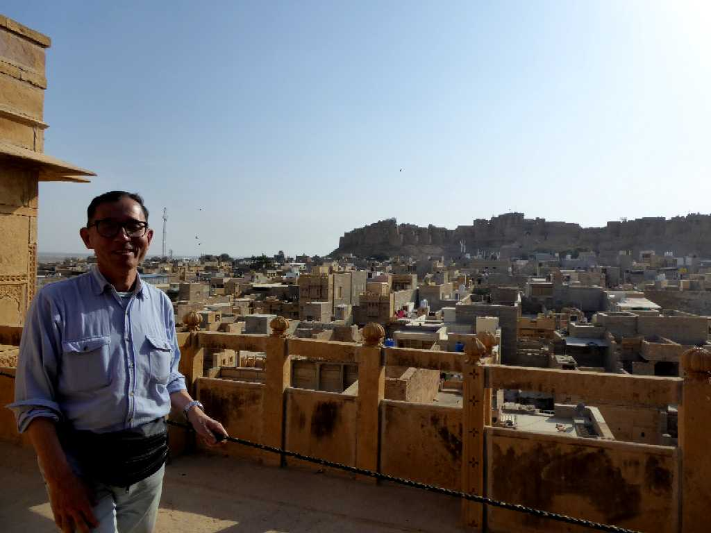

Patwon ki Haveli Jaisalmer
アフガニスタンから中国にかけて約３００店の支店を持っていた裕福な金融商人が１８０５年に５人の息子のために建てた５軒の大邸宅の集合体

Room Patwon ki Haveli

Peacock Room

January 29 2018 Patwon ki Haveli Jaisalmer
大邸宅は６０もの装飾されたバルコニーがあり城塞やゴールデンシティーを望める